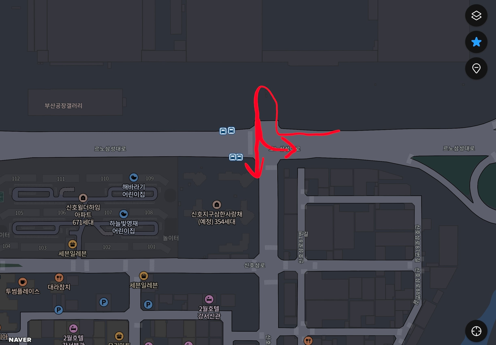
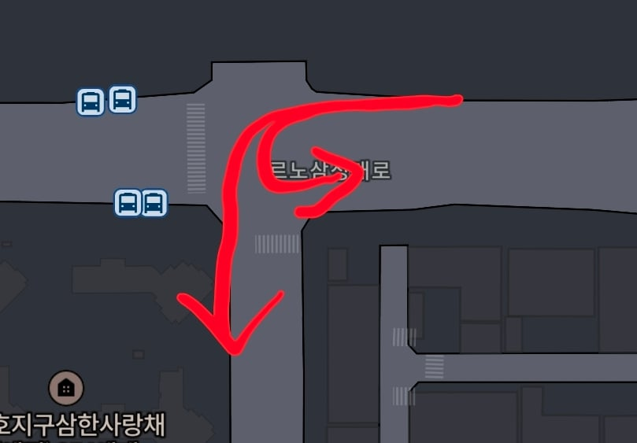

퇴근시간마다 얌체운전하는 좆버러지 새끼들 촬영해서 신고넣기

내가 이거까진 뭐라 안 함
어쨌든 우회전 후에 유턴해서 제대로 직좌신호받고 가는 거니까

근데 씨발 끝차로에서 좌회전 유턴 갈기는 새끼들은 진짜 양심 애미 뒤진 새끼들이냐?
1차로에서 존나 기다리는 사람들은 뭐 개병신 돌대가리 등신 머저리라 한참동안 기름 태워가면서 그러고 있는 줄 아나
그 와중에 어떤 틀딱새끼 존나 뿔나서 나한테 하는 말이
"당신은 뭔데 무슨 자격으로 이런거 찍어서 신고하냐"
라면서 내 얼굴 사진 찍어가던데
씨발년아 시민의 자격이요 병신 머저리새끼야
애초에 신고에 자격이 왜 필요해 대가리 멍청한거 티내나
존나 능지가 그따구니까 운전 저렇게 하다가 쳐 찍히는 거지 븅신
쓰레드 에 위치 검색해봐 생긴게 쓰레드에서 젊은 나에 취한 틀딱같이 생겻네 ㅋㅋㅋㅋ